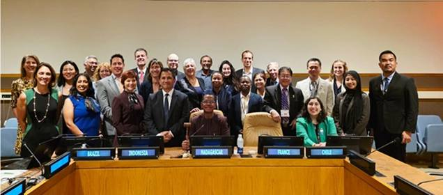

Revolusi Rumput Laut Dimulai: United Nations Global Seaweed Initiative Resmi Diluncurkan

New global platform unites countries and UN agencies to unlock seaweed’s potential for climate action, food security, and ocean sustainability
A bold new chapter in ocean sustainability and climate action was written in New York on 23 September 2025, as the United Nations Global Seaweed Initiative (UNGSI) was officially launched during the 80th UN General Assembly. Spearheaded by Madagascar, France, and Indonesia, the Initiative marks a turning point in how the world views and harnesses the power of seaweed. Chile joined the partnership with enthusiasm, while Brazil expressed strong support ahead of COP30 in Belém, signaling growing momentum across continents.
The global seaweed sector has tripled in size and doubled in value over the past two decades, reaching more than 35 million tons in 2022 and over $1.2 billion in exports in 2023. Yet despite this impressive growth, the sector remains under-supported, facing fragmented regulation and lacking the governance, standards, and coordination needed to fully realize its potential.
UNGSI aims to change that. It will serve as a global platform for cooperation, bringing together Member States, UN entities, research institutions, civil society, and industry stakeholders. It will strengthen policy leadership, foster scientific research and innovation, build technical capacity in producer countries, and raise awareness of seaweed’s role in achieving the Paris Agreement and the 2030 Agenda for Sustainable Development.
Chairing the launch, H.E. Paubert Tsimanaoraty Mahatante, Madagascar’s Minister of Fisheries and the Blue Economy, spoke about seaweed’s transformative potential. He described it as a resource that nourishes communities, restores ecosystems, and drives inclusive economic growth. He thanked the supporting founding partners — including UNCTAD, UNGC, UNIDO, FAO, IOC-UNESCO, and the Global Seaweed Coalition — for their commitment to advancing this shared vision.
Indonesia emphasized seaweed’s role as a catalyst for millions who depend on the sea, while Chile looked ahead to the 4th UN Ocean Conference in 2028, declaring that the journey had begun and that UNOC4 would be a milestone of achievements. Brazil, preparing to host COP30 next November, underscored the urgency of implementation, highlighting seaweed’s role in climate solutions and the livelihoods of two million Brazilian fishers — a microcosm of millions more around the world vulnerable to climate change.
UNGSI’s partners echoed a unified call to action. UNCTAD stressed the need for robust trade frameworks and global standards to integrate seaweed into international markets. UNIDO highlighted seaweed’s dual role as an environmental solution and economic opportunity, urging private sector innovation supported by enabling public policies. UNGC called for sustainable approaches, warning against the pitfalls of monoculture and highlighted the need to involve the private sector. The Global Seaweed Coalition pledged to mobilize its international community to advance funding, science, advocacy, and policy. CNRS reaffirmed its support for fundamental research to address biosecurity risks, invasive species, and genetic pollution, and endorsed the creation of regional research centers to drive a sustainable seaweed sector.
The Initiative will also contribute to the sustainable management of seaweed species found in areas beyond national jurisdiction, under the framework of the soon-to-enter-into-force United Nations BBNJ Agreement. Its next major milestone will be COP30, where UNGSI will feature prominently as a key accelerator of the global climate agenda.